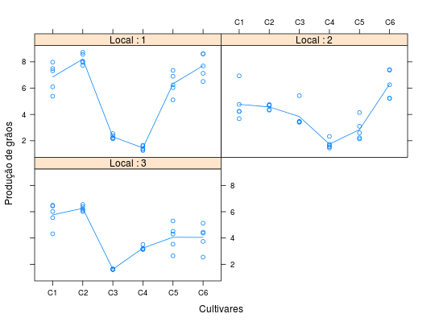

Resultados de ensaio de competição de cultivares de milho em diferentes locais onde foi avaliada a produção em grãos.
Um data.frame com 90 observações e 4 variáveis, em que
localcultreptprodBARROS; DIAS (2009), Exercício 9, Cap. 11, pág. 321.
library(lattice) data(DiasEx11.7.9)#> Warning: data set ‘DiasEx11.7.9’ not foundstr(DiasEx11.7.9)#> 'data.frame': 90 obs. of 4 variables: #> $ local: Factor w/ 3 levels "1","2","3": 1 1 1 1 1 1 1 1 1 1 ... #> $ cult : Factor w/ 6 levels "C1","C2","C3",..: 1 1 1 1 1 2 2 2 2 2 ... #> $ rept : int 1 2 3 4 5 1 2 3 4 5 ... #> $ prod : num 5.39 6.1 7.98 7.32 7.49 8.73 8.05 8.57 7.96 7.73 ...with(DiasEx11.7.9, tapply(prod, list(cult = cult, rept = rept, local = local), FUN = sum))#> , , local = 1 #> #> rept #> cult 1 2 3 4 5 #> C1 5.39 6.10 7.98 7.32 7.49 #> C2 8.73 8.05 8.57 7.96 7.73 #> C3 2.22 2.15 2.54 2.37 2.20 #> C4 1.41 1.26 1.61 1.66 1.33 #> C5 5.11 6.04 6.25 6.91 7.35 #> C6 6.51 8.60 8.62 7.69 7.13 #> #> , , local = 2 #> #> rept #> cult 1 2 3 4 5 #> C1 4.24 4.77 3.68 4.23 6.94 #> C2 4.33 4.71 4.75 4.69 4.37 #> C3 3.43 3.41 3.47 3.46 5.43 #> C4 2.33 1.54 1.74 1.64 1.45 #> C5 2.23 4.15 3.10 2.61 2.14 #> C6 5.22 7.41 7.37 6.26 5.24 #> #> , , local = 3 #> #> rept #> cult 1 2 3 4 5 #> C1 6.43 6.02 5.55 4.32 6.49 #> C2 6.01 6.12 6.39 6.55 6.21 #> C3 1.60 1.62 1.63 1.65 1.62 #> C4 3.16 3.13 3.15 3.51 3.21 #> C5 4.31 5.30 4.51 3.53 2.65 #> C6 2.55 3.74 4.45 5.13 4.37 #>xyplot(prod ~ cult | local, data = DiasEx11.7.9, type = c("p", "a"), as.table = TRUE, xlab = "Cultivares", ylab = "Produção de grãos", strip = strip.custom(strip.names = TRUE, var.name = "Local"))